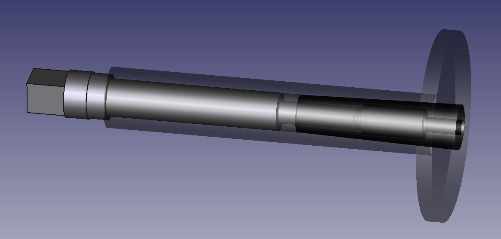
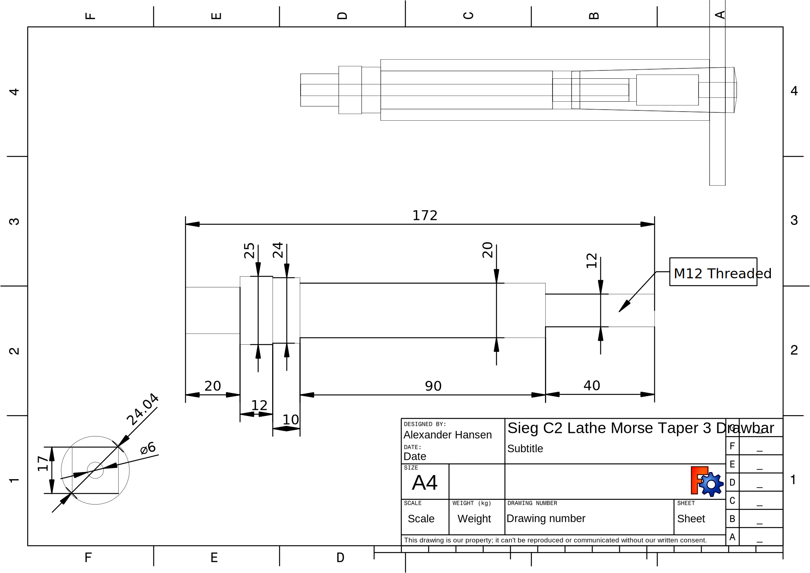
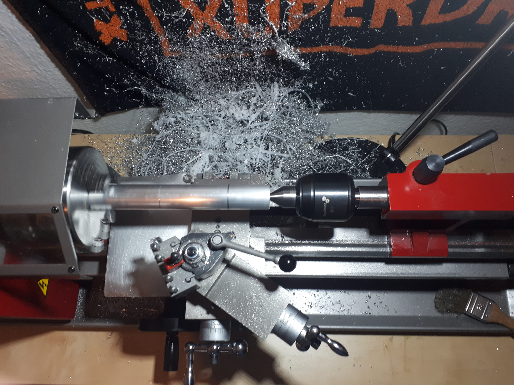
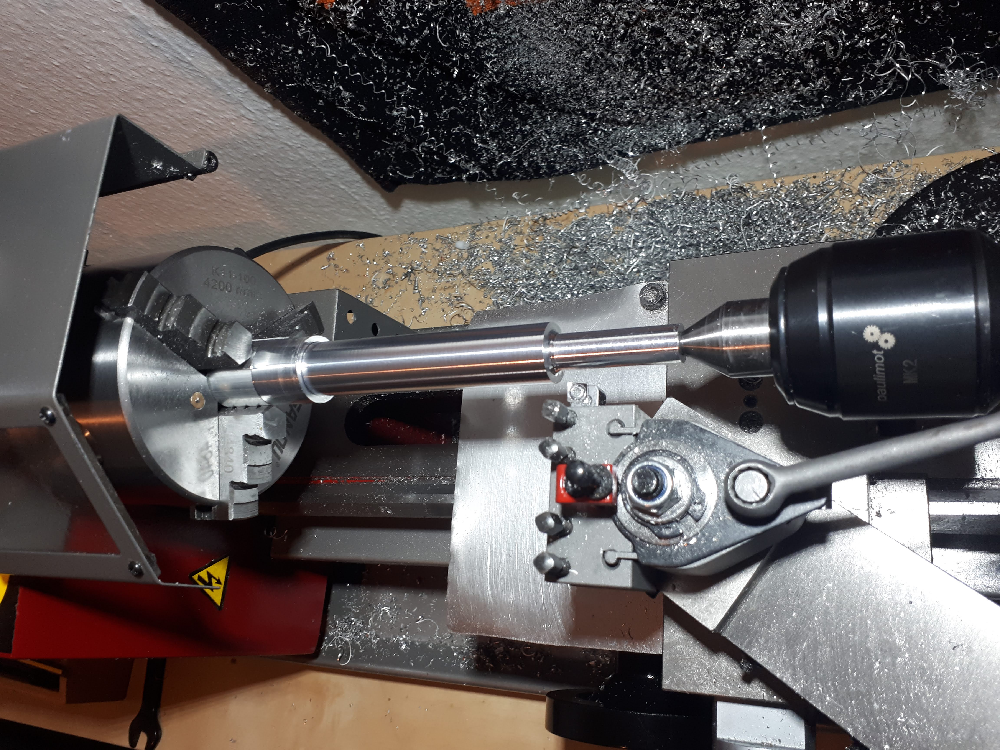
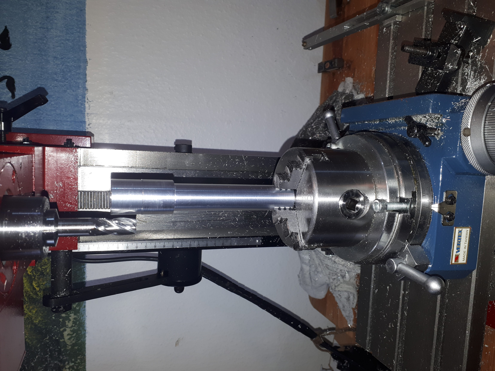
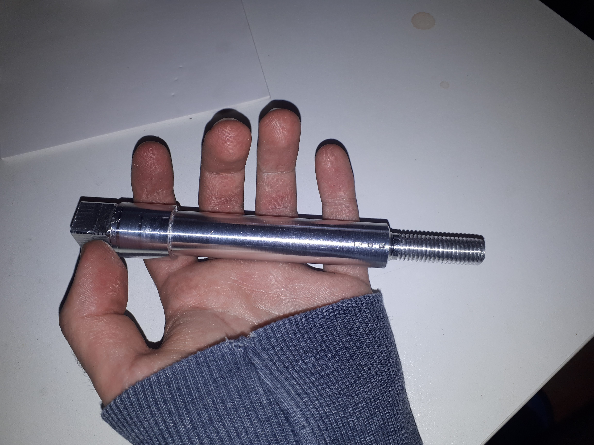
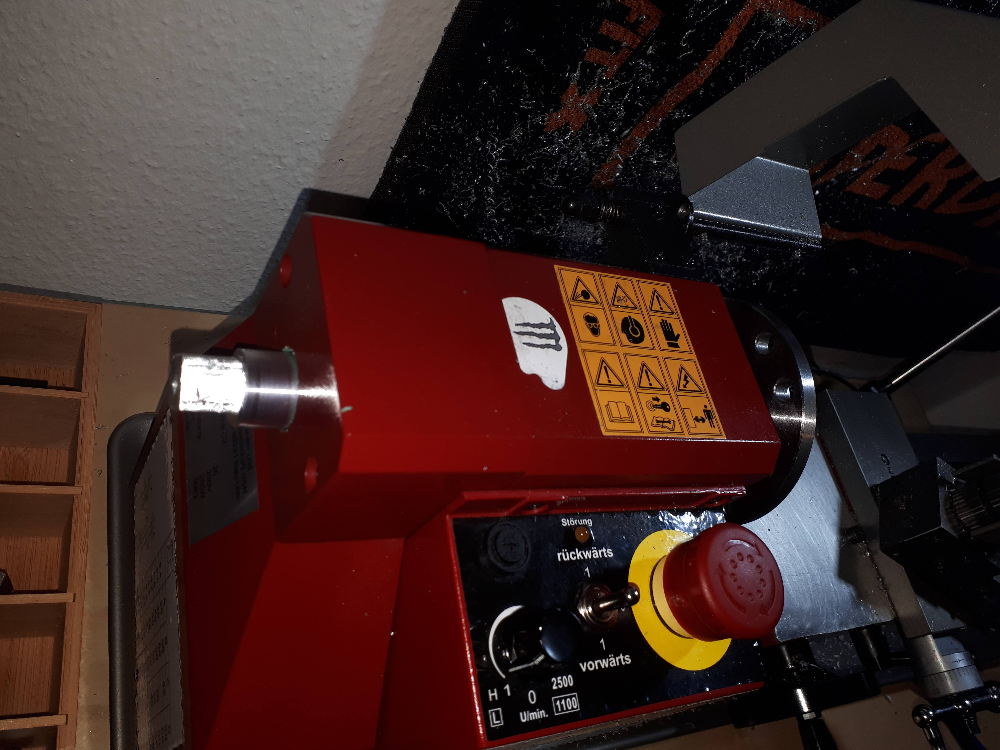
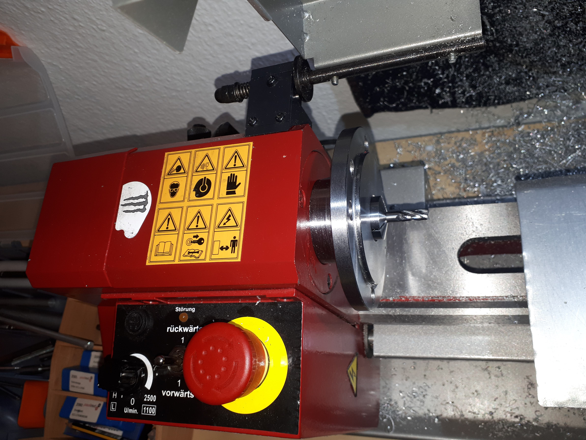

Home
Sieg C2 Lathe M12 Drawbar
For a while now i wanted to be able to do more precise work on the lathe. From accurate diameters to setting stops to well... runout. The simplest way to achieve better runout without too much tooling would be a 4 jaw chuck in my case, but I'm too lazy to indicate everything in. My lathe has a Morse Taper 3 in the spindle which allows for using MT3 Collets. No indicating and no worries about marking the surface with the jaws. Only for small stuff though. Now i was lacking a drawbar for these collets.
Available Products
There are good offers online at very low prices but i wanted something
made from a single piece and with a through-bore, to fit small round stock
without having to cut it to length beforehand. The part being a single piece is
an advantage since there is nothing that can be lost or disassembled in a drawer
somewhere.
The commercial Product is advertised as hardened which is something i cant
achieve in my workshop. I also made mine from Aluminum which is weaker,
and the throughbore weakens the part even more.
But making something yourself
is more fun even if the result is worse in the end. I may need to re-make this
part from steel if the thread strips or something else fails.

FreeCAD Process
 Production
     Mistakes Made
The thread turned out crooked since i threaded by hand, and M12 is quite a beast
to thread by hand with these smaller hand tools. Also should have waited with
drilling partway through the part until after the threading.
The rotary table setup was very sketchy. It could have been done
with the rotary table on its side and the part supported by something else.
That setup caused many problems because of the stickout.
I will see if this part turns out useful. Have not used it yet.